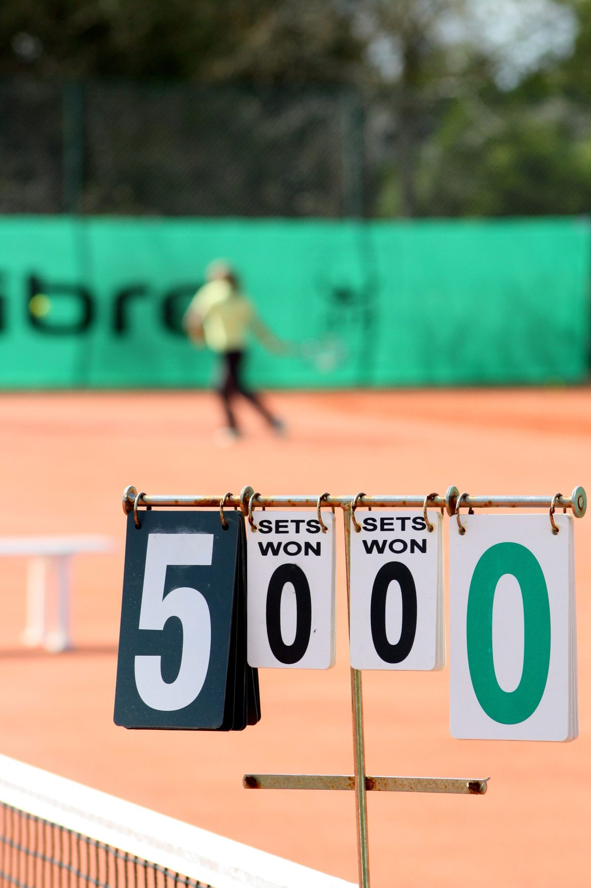

I want to talk about something that isn't technique, because in my experience it matters more.
Your kid just lost. Maybe badly. They're quiet, or they're angry, or they're doing that thing where they insist they don't care. You're walking to the car.
What you say in the next ten minutes will do more for their tennis than the lesson I gave them on Tuesday.
I've been coaching juniors since the 1980s, and I've watched hundreds of these car rides from the parking lot. Here's what I've learned.

Start with almost nothing
The instinct is to fill the silence. Resist it.
Kids need a minute — sometimes twenty — before they can talk about a loss without it turning into an argument. If you start the analysis while the disappointment is still fresh, they won't hear a word of it. They'll just learn that losing means getting talked at.
"That was a tough one. You hungry?" is a complete and excellent post-match conversation.
The tennis conversation can happen tomorrow. It'll go much better tomorrow.
Say what you saw, not how they did
There's a big difference between these two sentences:
"You played well."
"You kept going after that ball in the third game even though you were down. I noticed that."
The first one is a verdict, and if they just lost, they don't believe it. It sounds like a consolation prize.
The second one is an observation. It's specific, it's obviously true because you actually saw it, and it points at effort rather than result — which is the only part they control.
Kids can tell the difference between praise and attention. Attention is worth more.
Don't coach
I mean this kindly, and I mean it firmly: let the coaching be the coach's job.
When a parent gives technical instruction after a match, a few things go wrong at once. The advice usually contradicts something we've been working on. The kid now has two authorities to satisfy. And tennis stops being the thing they do and becomes the thing they're evaluated on.
I've seen genuinely talented juniors quit at fourteen, and it's almost never because they hit a ceiling. It's because tennis stopped being theirs.
If you saw something you want addressed, tell me. I'll work it into the lesson and it'll land better coming from me.
Ask a question you don't know the answer to
The best question I know is: "What was the toughest part?"
It's not "why did you lose." It doesn't presume anything. It lets them pick — maybe it was the opponent's serve, maybe it was the heat, maybe it was that they were nervous, maybe it was something that happened at school on Thursday.
And it teaches them to do the thing every good competitor eventually learns to do on their own: look at a loss honestly instead of flinching away from it.
Then listen to the answer without fixing it.
Let them be upset
Caring about losing is not a problem to be solved. It's the raw material.
The kids who go furthest are usually the ones who hate losing. What they need isn't to stop caring — it's to learn where to put it. That takes years, and it doesn't happen if every disappointment gets immediately smoothed over.
"That stinks. I'd be frustrated too" is a full and sufficient response.
One thing that always works
Tell them something you enjoyed about watching them play. Not something they did well — something you liked.
"I like watching you play" is, as far as I can tell, the single most effective sentence in junior sports.
It has nothing to do with the score. It can't be argued with. And it quietly answers the question every kid is actually asking after a loss, which is not was I good but am I still okay.
The long view
Most of the juniors I've coached over forty years didn't become professionals. Almost none did.
But a lot of them still play. They played in college, or they play doubles on the weekend now, or they're teaching their own kids. That's the actual win, and it's decided far more by whether tennis felt good to be around at twelve than by anything that happened on a scoreboard.
The car ride home is where that gets decided.
Want to work on this in person?
Coach Tommy offers private and small-group lessons in Clermont, Winter Garden, Windermere, and throughout Central Florida — for juniors, adults, and complete beginners.
Book a Lesson or call/text (407) 259-0774